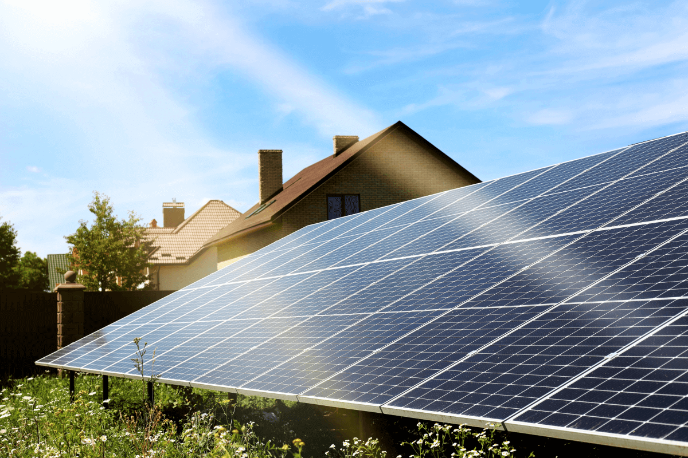
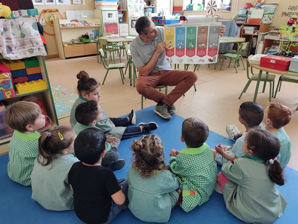
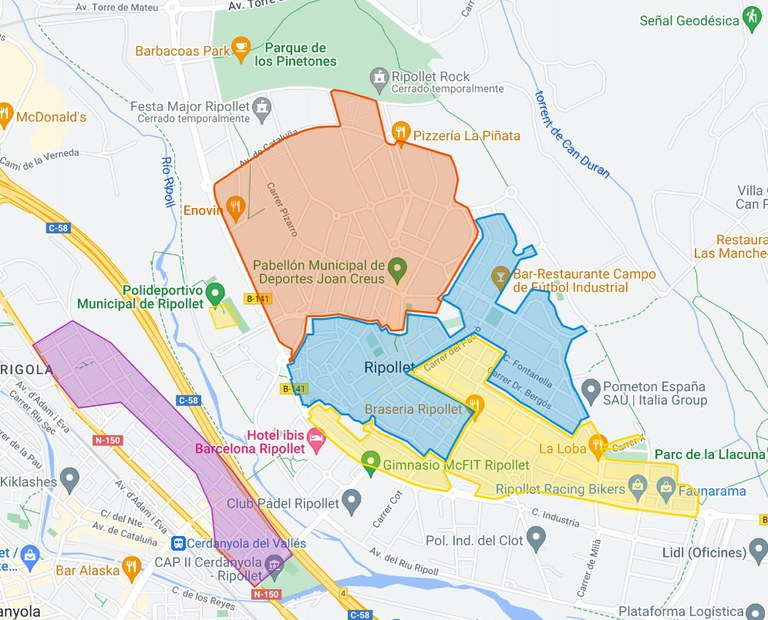

Medidas Medioambientales
- Instalación de paneles solares en edificios públicos.
- Promoción del uso de bicicletas con nuevas ciclovías.
- Educación ambiental en colegios locales.
- Creación de puntos de reciclaje en toda la ciudad.
El Ayuntamiento equipa edificios municipales con paneles solares para reducir emisiones de CO₂, ahorrar energía y promover el uso de energías renovables entre los vecinos.
Se amplía la red de ciclovías para fomentar la movilidad sostenible, reducir la contaminación y promover hábitos saludables en la ciudadanía.

Programas educativos enseñan a los jóvenes la importancia del medio ambiente mediante talleres, charlas y actividades prácticas sobre reciclaje y sostenibilidad.
Se instalan puntos de reciclaje accesibles en Ripollet y se realizan campañas de sensibilización para mejorar la gestión de residuos y fomentar el reciclaje.
